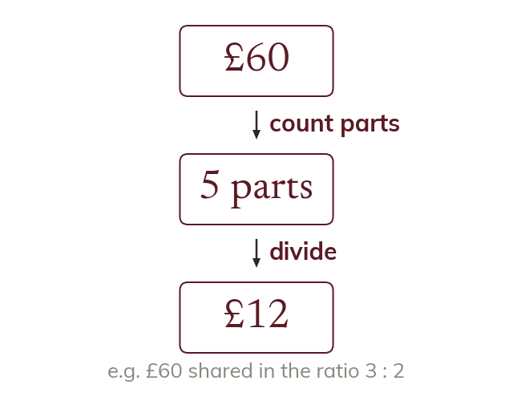

Count the parts before dividing
Divide the quantity by the total number of parts, not by the number of shares. Each share is then one part times its own number of parts.
A ratio can be read as a total number of equal parts, so the quantity to be shared is divided by that total and not by the number of shares. In the ratio 3:2 there are five parts, not two, and dividing by two would give half the quantity to each side regardless of what the ratio said. Once the value of one part is known, each share is that value multiplied by its own number of parts, which is why the shares come out unequal from an equal division. Adding the shares back together and checking they give the original total is a complete check on the whole calculation.